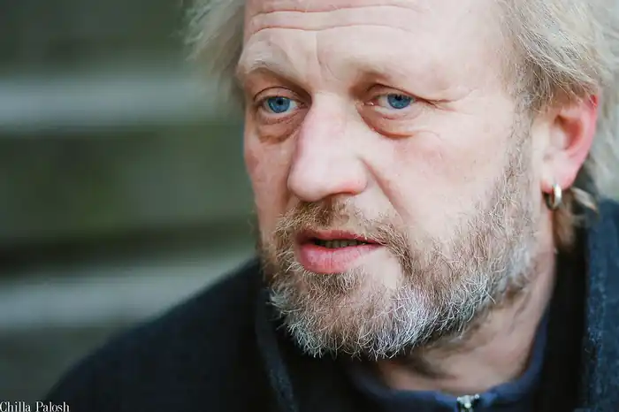
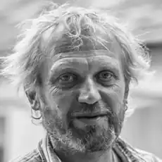
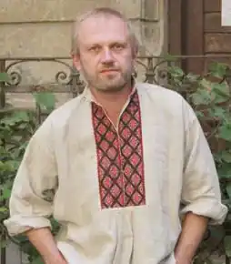
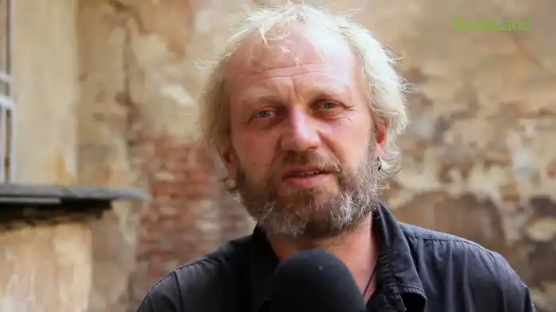
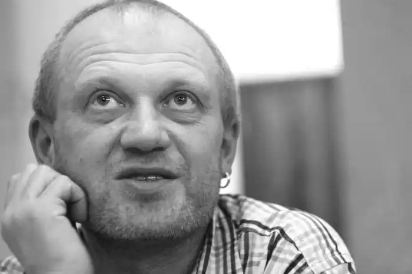

арас Прохасько (16 травня 1968, Івано-Франківськ) — сучасний український письменник, журналіст, один із представників станіславського феномену. Член Асоціації українських письменників.
Закінчив біологічний факультет Львівського державного університету імені Івана Франка (1992). Брав участь у студентському русі 1989-1991 років, у "революції на граніті" у Києві у 1990 року.
За словами Прохаська, він вирішив стати письменником ще з 12 років. У школі не читав радянських українських авторів. Тільки після армії прочитав вірші Дмитра Стуса та почав писати сам. Оскільки Тарас вчився на абсолютно немистецькому біологічному факультеті, Прохасько певний час вважав, що сучасної української літератури не існує. Перші її твори він прочитав лише у 1990 році, коли познайомився з Юрком Іздриком, який розвісив в Івано-Франківську оголошення про створення літературно-мистецького часопису "Четвер". Перші твори Прохаська Іздрик не прийняв, а згодом Тарас написав своє перше оповідання "Спалене літо", яке було опубліковане у часописі. Після закінчення навчання змінив безліч професій: трудився в Івано-Франківському інституті карпатського лісівництва, викладав у школі рідного міста, був барменом, сторожем, ведучим на радіо FM "Вежа", працював у художній галереї, в газеті, на телестудії. У 1998 році почав працювати журналістом у львівській газеті "Експрес", згодом писав авторські колонки до "Експресу" та "Поступу". Коли друзі Прохаська створили "газету його мрій", почав писати статті та вести авторську колонку в Івано-Франківській обласній тижневій газеті "Галицький кореспондент". У 2004 році кілька місяців прожив у Кракові, отримавши літературну стипендію польської культурної фундації "Stowarzyszenie Willa Decjusza — Homines Urbani". У квітні 2010 року Прохасько вперше відвідав США, де в нього відбулися творчі вечори у Нью-Йорці та Вашингтоні. Одружений, має двох синів. Нагороди 1997 — лауреат премії видавництва "Смолоскип". 2006 — перше місце у номінації "Белетристика" за книгу "З цього можна було б зробити кілька оповідань" (версія журналу "Кореспондент"). 2007 — третє місце у номінації "Документалістика" за книгу "Порт Франківськ" (версія журналу "Кореспондент"). 2007 — лауреат літературної премії імені Джозефа Конрада (заснована Польським інститутом у Києві). 2011 — книгу Тараса Прохаська "БотакЄ" було визнано "Книгою року".